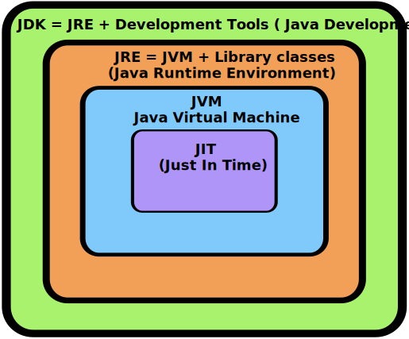
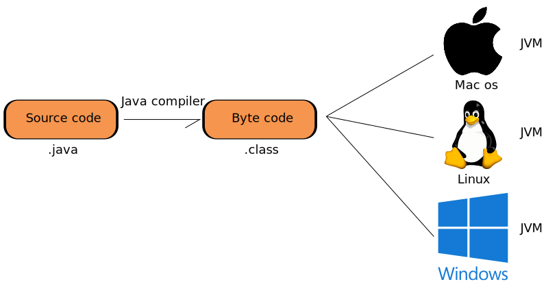
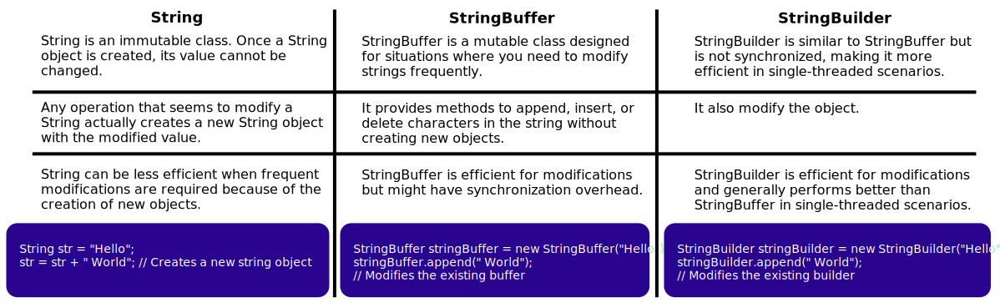
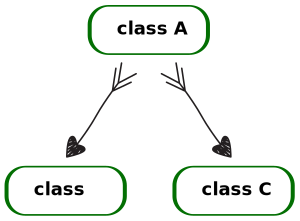
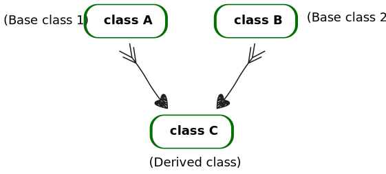

Introduction to Java
- Java is a high-level, versatile, and platform-independent programming language. It was developed by Sun Microsystems (now owned by Oracle Corporation) in the mid-1990s. Java is known for its "write once, run anywhere" capability, meaning that code written in Java can be executed on various platforms without modification. It's extensively used for web development, mobile app development (Android), enterprise applications, scientific computing, and more.
How Java Executes?

- The code written in java is human readable and it is saved using extension .java
- This code is known as source code
- Java Compiler
- Java compiler converts the source code into byte code which have the extension .class
- This byte code does not directly run on system
- We need JVM (Java Virtual Machine) to run this
- Reason why java is platform independent
- Java Interpreter
- Converts byte code to machine code i.e. 0's and 1's
- It translate the byte code line by line to machine code
More about Platform Independence
- Platform independence means that bytecode can run on all operating systems.
- We need to convert source code to machine code so that the computer can understand it.
- A compiler helps in achieving this by turning it into executable code.
- This executable code consists of a set of instructions for the computer.
- After compiling C/C++ code, we get a .exe file, which is platform-dependent.
- In Java, we get bytecode. The Java Virtual Machine (JVM) converts this bytecode into machine code.
- Java is platform-independent, but the JVM is platform-dependent.
Architecture of java
JDK
- JDK is a software package provided by Oracle that includes everything required for developing, compiling, and running Java applications. It consists of the Java Runtime Environment (JRE), the Java compiler (javac), development tools, libraries, documentation, and other resources.
JRE
- JRE is a subset of the JDK and provides the necessary runtime environment for executing Java
applications. It includes the Java Virtual Machine (JVM) and essential class libraries. Users
who only need to run Java applications, rather than develop them, typically install the JRE.
- These are minimum requirement for running java application.
- When JVM executes byte code then the libraries and class files which are necessary for executing of that code are provided by JRE.
- So basically, for executing byte code we require some runtime libraries (recompiled class file) which are provided by JRE
JVM
- JVM is a key component of the Java platform. It's a virtualized execution environment that interprets compiled Java bytecode and translates it into native machine code, enabling Java applications to run on different operating systems without modification. JVM manages memory, performs garbage collection, and provides runtime support for various Java features.
Compile Time

- After we get the .class file the next thing happen at runtime :
- Class loader loads all classes needed to execute the program
- JVM sends code to bytecode berifies to check the format of code.
JVM Role
- Java file (source code .java) is compiled using compiler and after compilation a file (byte code .class) is generated and it can run on any operating system.
- This Byte code is for Java Virtual Machine which is different for each operating system, and JVM helps in execution of byte code.
More on JVM

- JVM provides run time environment to execute byte code, this doesn't exists physically, it is a software component and its work is to load byte code file, verify it and execute it.
- There are three subcomponent of JVM:
- Class loader
- JVM memory area
- Execution engine
- Class loader → It loads byte code in the main memory.
- JVM memory area → It is the memory area allocated to program by Java Virtual
Machine.
- When we execute a program, it requires storage space for methods, classes, and variables, which is provided by the JVM (Java Virtual Machine).
- Class area → It stores method code, class fields, and method data.
- Heap space → This is used to allocate memory for Java objects.
- Stack memory area → It stores method-specific values, including local variables and reference objects.
- PC registers → These are used to store the executing thread's instruction address. Once an instruction is executed, it stores the address of the next instruction.
- Execution Engine → Inside this we have JIT and Garbage collector.
- JIT → It helps in improving performance by compiling byte code which have
same type of functionality at once.
- It translate byte code to CPU instructions which are machine understandable.
- Garbage collector → It deallocates unreferenced memory.
- JIT → It helps in improving performance by compiling byte code which have
same type of functionality at once.
Primitive data types
- Primitive data types are those data types which are not breakable
- Ex → String is not a primitive data type as we can break this data type into char.
- i.e. String "Kunal" can be divided into → 'K' 'u' 'n' 'a' 'l'
- but primitives data type are not breakable
- we cannot break a char, int, etc.
List of primitive data types in java are :-
In float and long we have used f an dl. it denotes that the number in the variable is float or long type. If we don not use this java consider float value as double and long value as int.
-
Literals → It is syntatic representation of boolean, character, string, and
numeric data.
- Ex :- int a = 10
here 10 is called literal
- Ex :- int a = 10
-
Identifiers → name of variable, methods, class, packages, etc. are known as
identifiers.
- Ex:- int a = 10;
Here a is identifier.
- Ex:- int a = 10;
Control statements
- In Java, control statements are used to manage the flow of execution in a program.
- They allow you to make decisions, repeat code blocks, and alter the program's behavior based on certain conditions.
- Following are some common control statements with code examples:
if statement
- The if statement is used to execute a block of code only if a certain condition is true.
int number = 10;
if (number > 5) {
System.out.println("Number is greater than 5");
}
if-else statement
- The if-else statement is used to execute one block of code if a condition is true and another block of code if the condition is false.
int number = 3;
if (number % 2 == 0) {
System.out.println("Number is even");
} else {
System.out.println("Number is odd");
}
if-else if-else Statement:
- The if-else if-else statement allows you to check multiple conditions in sequence.
int score = 85;
if (score >= 90) {
System.out.println("Excellent");
} else if (score >= 80) {
System.out.println("Good");
} else if (score >= 70) {
System.out.println("Average");
} else {
System.out.println("Needs improvement");
}
switch statement
- The switch statement is used to select one of many code blocks to be executed based on the value of a variable.
int dayOfWeek = 4;
switch (dayOfWeek) {
case 1:
System.out.println("Monday");
break;
case 2:
System.out.println("Tuesday");
break;
case 3:
System.out.println("Wednesday");
break;
case 4:
System.out.println("Thrusday");
break;
case 5:
System.out.println("Friday");
break;
case 6:
System.out.println("Saturday");
break;
case 7:
System.out.println("Sunday");
break;
default:
System.out.println("Invalid day");
}
Enhanced Switch ↓
int dayOfWeek = 4;
switch (dayOfWeek) {
case 1 -> System.out.println("Monday");
case 2 -> System.out.println("Tuesday");
case 3 -> System.out.println("Wednesday");
case 4 -> System.out.println("Thursday");
case 5 -> System.out.println("Friday");
case 6 -> System.out.println("Saturday");
case 7 -> System.out.println("Sunday");
default -> System.out.println("Invalid day");
}
while loop
- The while loop repeatedly executes a block of code as long as a given condition is true.
int count = 0;
while (count < 5) {
System.out.println("Count: " + count);
count++;
}
do-while loop
- The do-while loop is similar to the while loop, but it guarantees that the block of code is executed at least once before the condition is checked.
int i = 0;
do {
System.out.println("Value of i: " + i);
i++;
} while (i < 5);
for loop
- The for loop allows you to specify the initialization, condition, and update expressions in a single line.
for (int i = 0; i < 5; i++) {
System.out.println("Iteration: " + i);
}
Enhanced for loop (for-each)
- The enhanced for loop is used to iterate over elements in arrays or collections.
int[] numbers = { 1, 2, 3, 4, 5 };
for (int num : numbers) {
System.out.println(num);
}
First Java Program
Structure of java file
Source Code in Java
- The source code we write in Java is typically saved with the .java file extension.
- Every piece of code within a .java file must be enclosed in classes. In other words, every file with a .java extension represents a class.
- A Java class should have the same name as the file it's in, but it's not compulsory for the first letter of the class name to be uppercase, although it's a naming convention.
However, there are some rules:
- A class with the same name as the file must be declared as a public class.
- Each Java program must have a main function/method within this public class, which is the entry point of the program.
Converting .java to .class
- Using the javac compiler, we can convert a .java file to a .class file. Here's the
command to convert a
.java file to a .class file:
- Assuming the name of the .java file is "Main," you can use the following command:
javac Main.java
- Assuming the name of the .java file is "Main," you can use the following command:
Running the program
- By using java and name of file we can run the program
- command → java Main
javac Main.java
java Main
Hello world program
public class Test{
public static void main(String[] args){
System.out.println("Hello World");
}
}
- public (first line) → public is an access modifier which allows to access the class from anywhere
- class → It is a name group of properties and functions
- Test → It is just the name of class as same as the name of file.
- public (second line) → It is used to allow the program to use main fruntion from anywhere
- static → It is a keyword which helps the main method to run without using objects.
- void → It is a keyword used when we don not want to return anything from a method/function
- main → It is the name of method.
- String [] args → It is a command line argument of string type array.
- System → It is a final class defined in java.lang package.
- out → It is a variable of PrintStream type which is public and static member field of the System class
- println → It is a method of PrintStream class, it prints the arguments passed to it and adds a new line. print can also be used here but it prints only arguments passed to it, it do not adds a new line.
What is a Package?
- A package in Java is essentially a directory or folder that contains Java files.
- It is used to organize and structure Java programs, providing rules and structure to our code.
Comments in java
Comments are something which is written in source code but ignored by the compiler.
- Two type of comment
- Single line comment :- used to comment down a single line (// is used for it.)
- Multi line coment :- used to comment down multiple lines (/* */ is used for it.)
// This is a single line comment
/* This is a
Multi line comment
*/
Scanner class
- Input can be accepted in 3 way in Java:
- Command line (console)
- I/O Stream
- Scanner class
- It is introduced by Java 8.
- Java util (utility) package is required.
- The Scanner class in Java is a part of the java.util package and provides a convenient way to read input from various sources such as the keyboard, files, and streams. It is widely used for interactive input in console-based applications.
- The Scanner class allows you to parse and extract different types of data from the input stream, like integers, floating-point numbers, strings, and more.
- Some key method:
- nextInt() - this is used to input an integer.
- nextLine() - this is used to input a string.
- nextFloat() - used for reading float value.
- Program to demonstrate Scanner class↓
// import java.util.*; // This will import all classes although we require only scanner class so, we should import only that
import java.util.Scanner;
class Test {
public static void main(String args[]) {
int a;
int b;
int c;
Scanner input = new Scanner(System.in);
System.out.println("Enter the first number : ");
a = input.nextInt();
input.nextLine();
System.out.println("Enter the a second number : ");
b = input.nextInt();
System.out.println("Enter the a third number : ");
c = input.nextInt();
input.close(); // after usage on Scanner object we should close it.
// displaying data :
System.out.println("a is = " + a + ", b = " + b + " and c = " + c);
}
}
Output ↓
a is = 1, b = 13 and c = 44
- Scanner → It is a class required to take input, it is present in java.util package.
- input → It is an object that we are creating to take input.
- new → It is a keyword used to create an object in java.
- System.in → System is a class and in is a variable that denotes we are taking input from standard input stream (i.e. keyboard)
Inputs in java
We have Scanner class available in java.util package to take input
- To use this class we have to
- Import java.util package in our file
- Create object of the scanner class
- Use that object to take input from the keyborad.
//syntax
import java.util.Scanner;
public class Main{
public static void main(String [] args){
Scanner input = new Scanner(System.in);
}
}
- Scanner → It is a class required to take input, it is present in java.util package.
- input → It is an object that we are creating to take input.
- new → It is a keyword used to create an object in java.
- System.in → System is a class and in is a variable that denotes we are taking input from standard input stream (i.e. keyboard)
int input → nextInt() is a function used to take input of int.
Scanner input = new Scanner(System.in);
int rollno = input.nextInt();
float input → nextFloat() is a function used to take input of float.
Scanner input = new Scanner(System.in);
float marks = input.nextFLoat();
string input →
Two ways to take string input
// 1. using next() methods - It will take one word input till a space occurs
Scanner input = new Scanner(System.in);
String s1 = input.next();
// 2. using nextLine() methods - It will take all string input including spaces.
Scanner input = new Scanner(System.in);
String s2 = input.nextLine();
Input Using Command Line Arguments
- Command line arguments are values passed to a Java program when it is executed from the command line or terminal.
- These arguments can be used to provide input data to the program at runtime.
- In Java, command line arguments are passed as an array of strings to the 'main' method of the class that serves as the entry point of the program.
Syntax ↓
public static void main(String[] args)
{
// Access and use command line arguments here
}
- 'args': This is an array of strings that holds the command line arguments.
Accessing Command Line Arguments ↓
- Command line arguments are accessed using the args array.
- The first argument is at args[0], the second at args[1], and so on.
- You can use these arguments as input data for your program.
Here's a simple Java program that takes two command line arguments (numbers) and calculates their sum:
public class CommandLineArgumentsExample {
public static void main(String[] args) {
if (args.length < 2) {
System.out.println("Please provide two numbers as command line arguments.");
return;
}
// Parse the command line arguments as integers
int num1 = Integer.parseInt(args[0]);
int num2 = Integer.parseInt(args[1]);
// Calculate and display the sum
int sum = num1 + num2;
System.out.println("Sum of " + num1 + " and " + num2 + " is: " + sum);
}
}
Running the program:
- To rum the program and provide command line arguments, follow these steps:
- Open command prompt or terminal.
- Navigate to the directory containing your compiler Java class ('CommandLineArgumentsExample').
- Run the program with two numbers as arguments:
java CommandLineArgumentsExample 10 20
Output in Java
- In Java, you can print numbers and strings to the console using various methods provided by the System.out object, which is an instance of the PrintStream class. Here are a few common methods along with examples ↓
1: Using System.out.print(): This method prints the given content without moving to the next line.
int number = 42;
System.out.print("The answer is: ");
System.out.print(number);
Output ↓
The answer is: 42
2: Using System.out.println(): This method prints the given content and moves to the next line after printing.
String message = "Hello, World!";
System.out.println(message);
System.out.println("This is a new line.");
Output ↓
Hello, World!
This is a new line.
3: Using System.out.printf(): This method allows you to format and print text with placeholders for variables.
String name = "Alice";
int age = 30;
System.out.printf("My name is %s and I am %d years old.", name, age);
Output ↓
My name is Alice and I am 30 years old.
4: Using Concatenation: You can use the + operator to concatenate strings and variables for printing.
double price = 19.99;
System.out.println("The item costs $" + price);
Output ↓
The item costs $19.99
Program for sum of two numbers
import java.util.Scanner;
public class Sum {
public static void main(String[] args) {
Scanner input = new Scanner(System.in);
System.out.print("Enter first no. ");
int num1 = input.nextInt();
System.out.print("Enter second no. ");
int num2 = input.nextInt();
int sum = num1+num2;
System.out.println("The sum is ="+ sum);
}
}
- Good practise ↓
- To separate functionality into different classes. This approach is known as Object-Oriented Programming (OOP) and it promotes modular and organized code by breaking down different responsibilities into separate classes. The class with the main method serves as the entry point of your program, and other classes contain the functions, variables, and methods that perform specific tasks.

Consideraton: Be cautious when mixing different next*() methods, as newline characters might be left in the input buffer. Use additional nextLine() to consume them if needed.
import java.util.Scanner;
class Initial {
public int a;
public String b;
void getValue() {
Scanner input = new Scanner(System.in);
System.out.println("Enter the first number : ");
a = input.nextInt();
System.out.println("Enter the a string : ");
b = input.nextLine();
input.close();
}
void display() {
System.out.println("a is = " + a + " and b = " + b);
}
}
class Test {
public static void main(String args[]) {
Initial obj = new Initial();
obj.getValue();
obj.display();
}
}
- In above program you cannot insert the string value because when you use nextInt(), it reads an integer from the input, but it doesn't consume the newline character (Enter key) that you press after entering the integer. As a result, when you call nextLine() immediately after nextInt(), it reads the remaining newline character from the previous input, resulting in unexpected behavior.
- This is resolved by adding an additional scanner.nextLine() after nextInt() to consume the newline character left in the input buffer. This will ensure that the newline character is properly consumed before you read the next line using nextLine().
import java.util.Scanner;
class Initial {
public int a;
public String b;
void getValue() {
Scanner input = new Scanner(System.in);
System.out.println("Enter the first number : ");
a = input.nextInt();
input.nextLine();
System.out.println("Enter the a string : ");
b = input.nextLine();
input.close();
}
void display() {
System.out.println("a is = " + a + " and b = " + b);
}
}
class Test {
public static void main(String args[]) {
Initial obj = new Initial();
obj.getValue();
obj.display();
}
}
Misconception about main function in java, see the following program
import java.util.Scanner;
class Test {
public int a;
public int b;
public int c;
public static void main(String args[]) {
Scanner input = new Scanner(System.in);
System.out.println("Enter the first number : ");
a = input.nextInt();
input.nextLine();
System.out.println("Enter the a second number : ");
b = input.nextInt();
System.out.println("Enter the a third number : ");
c = input.nextInt();
input.close();
// displaying data :
System.out.println("a is = " + a + ", b = " + b + " and c = " + c);
}
}
- In above code we are trying to access non-static variables 'a', 'b', and 'c' from the 'main' method.
- Remember, in Java, static methods can only directly access static variables.
- To fix this issues, we can either make 'a', 'b', and 'c' static or create an instance of the 'Test' class to access these variables.
- The correct way to access data member ↓
import java.util.Scanner;
class Test {
public static int a; // *
public static int b; // *
public static int c; // *
public static void main(String args[]) {
Scanner input = new Scanner(System.in);
System.out.println("Enter the first number : ");
a = input.nextInt();
input.nextLine();
System.out.println("Enter the second number : ");
b = input.nextInt();
System.out.println("Enter the third number : ");
c = input.nextInt();
input.close();
// displaying data :
System.out.println("a is = " + a + ", b = " + b + " and c = " + c);
}
}
Programs
import java.util.Scanner;
class Digits {
static Scanner input = new Scanner(System.in);
static int num;
public static void main(String args[]) {
System.out.println("Enter your number : ");
num = input.nextInt();
System.out.println("Number of digits = " + noOfDigits(num));
}
public static int noOfDigits(int num) {
int digits = 0;
while (num > 0) {
digits++;
num /= 10;
}
return digits;
}
}
import java.util.Scanner;
class Sum {
static Scanner input = new Scanner(System.in);
static int num;
public static void main(String args[]) {
System.out.println("Enter your number : ");
num = input.nextInt();
System.out.println("Sum of digits = " + sumOfDigits(num));
}
public static int sumOfDigits(int num) {
int sum = 0;
while (num > 0) {
sum = sum + (num % 10);
num /= 10;
}
return sum;
}
}
Type Conversion
When one type of data is assigned to another type of variable an automatic type conversion will take place under some condition
- Conditions :-
- Two types should be compatible
- Destination type should be greater then the source type.
Type Casting
When we convert one type of data to another type is known as type casting.
Ex :- int num = (int) (67.3455f)
Automatic type promotion in expressions
While evaluating expressions the intermediate value may exceed the operands and hence the expression value will be promoted.
There are some condition for type promotion :-
- Java automatically promotes each byte, short, or char operand when evaluating an expression.
- If one operand is a long, float or double the whole expression is promoted to long, float or double respectively.
byte a = 40;
byte b = 50;
byte c = 100;
int d = (a*c)/c;
System.out.println(d);
Here when a*b occurred it became 2000 which is out of the range of byte (as byte max can be 256). So, here byte is automatically promoted to int type.
Example for thorough review concept.
public class TypePromotion {
public static void main(String[] args) {
byte b = 42;
byte c = 'a';
short s = 1024;
int i = 50000;
float f = 5.67f;
double d = 0.1234;
double result = (f*b)+(i/c)+(d*s);
System.out.println((f*b)+" "+(i/c)+" "+(d*s));
System.out.println(result);
}
}
Explicit type casting
If we want to store large value into small data type
Ex : byte b = 50;
b = (byte) (b*2); // type casting int to byte.
Functions in Java
- In Java, functions are known as methods. A method is a block of code that performs a specific task. Methods in Java are used to encapsulate code, promote reusability, and organize your program's logic
- Here's how you define and use methods in Java ↓
access_modifier return_type method_name(parameter_list) {
// Method body
// Code to perform the task
// Optional return statement if return_type is not void
}
- access_modifier: Specifies the visibility of the method (e.g., public, private, protected, or package-private).
- return_type: Specifies the type of value the method returns. Use void if the method doesn't return anything.
- method_name: The name of the method.
- parameter_list: List of input parameters enclosed in parentheses. If there are no parameters, leave it empty.
- method_body: The actual code that the method executes.
Static vs non static concept
The concepts of "static" and "non-static" are fundamental in object-oriented programming, and they pertain to how members (variables and methods) of a class are associated with the class itself and instances of the class.
- Static members → Static members (variables and methods) belong to the class itself
rather than to instances of the class.
- They are shared among all instances of the class.
- You can access static members directly using the class name (e.g., ClassName.staticVariable) or within static methods.
- Static members are created and initialized when the class is loaded into memory and exist throughout the program's execution.
- Non-Static Members (Instance Members): → Non-static members belong to instances of
the class.
- Each instance of the class has its own copy of non-static members.
- Non-static members cannot be accessed directly from static methods because they are associated with instances.
- They are created and initialized when an instance of the class is created and destroyed when the instance is garbage-collected.
Remember ↠ We can't directly access these non-static members and variable in static methods because they belong to an instance of the class, not to the class itself.
- How to use non-static method inside static method?
public class StaticVsNonStaticExample {
// Non-static variable
int nonStaticVar = 10;
// Non-static method
void nonStaticMethod() {
System.out.println("Non-static method called.");
}
public static void main(String[] args) {
// Cannot access non-static variables or methods directly from a static context (main method)
// Uncommenting the following lines will result in a compilation error
// System.out.println(nonStaticVar); // Error: non-static variable cannot be referenced from a static context
// nonStaticMethod(); // Error: non-static method cannot be referenced from a static context
// To use non-static variables/methods, you need to create an instance of the class
StaticVsNonStaticExample instance = new StaticVsNonStaticExample();
System.out.println("Non-static variable: " + instance.nonStaticVar);
instance.nonStaticMethod();
}
}
- To access non-static members within a static context like the main method, you need to create an instance of the class and then use that instance to access the members.
- Static methods and variables belong to the class itself and can be accessed directly from other static methods without creating an instance. Non-static methods and variables belong to instances of the class and require an instance to be accessed.
Using both static and non static method
public class StaticAndNonStaticExample {
static int staticVar = 10; // Static variable
int nonStaticVar = 20; // Non-static variable
static void staticMethod() {
System.out.println("Static method called.");
}
void nonStaticMethod() {
System.out.println("Non-static method called.");
}
public static void main(String[] args) {
System.out.println("Static variable: " + staticVar);
staticMethod();
// Uncommenting the following lines will result in a compilation error
// System.out.println(nonStaticVar); // Error: non-static variable cannot be referenced from a static context
// nonStaticMethod(); // Error: non-static method cannot be referenced from a static context
StaticAndNonStaticExample instance = new StaticAndNonStaticExample();
System.out.println("Non-static variable: " + instance.nonStaticVar);
instance.nonStaticMethod();
}
}
Function example ↓
import java.util.Scanner;
class Test {
public static void main(String[] args) {
Scanner input = new Scanner(System.in);
int number;
System.out.print("Enter a number : ");
number = input.nextInt();
System.out.println("The sqare of the given number = " + squareNum(number));
input.close();
}
public static int squareNum(int num) {
return num * num;
}
}
import java.util.Scanner;
class Test {
public static void main(String[] args) {
Scanner input = new Scanner(System.in);
int number;
System.out.print("Enter a number : ");
number = input.nextInt();
if (isPalindrome(number)) {
System.out.println("Given number is palindrome");
} else {
System.out.println("Given number is not palindrome");
}
input.close();
}
public static boolean isPalindrome(int num) {
int rev = 0;
int temp = num;
while (temp > 0) {
rev *= 10;
rev += (temp % 10);
temp /= 10;
}
if (rev == num)
return true;
return false;
}
}
static keyword
- We have already dicussed this but let's deep dive into it.
- Static in Java is a keyword that is used to create members (variables, methods, and blocks) that belong to the class rather than instances of the class. These members are shared among all instances of the class and can be accessed using the class name itself.
Static block
- Static blocks are used to initialize static variables or perform some one-time initialization tasks for a class. They are executed when the class is loaded into memory.
Example ↓
public class StaticBlockExample {
static {
System.out.println("This is a static block.");
}
public static void main(String[] args) {
// The static block is executed before the main method.
System.out.println("Inside the main method.");
}
}
- When to use: Static blocks are used when you need to perform some one-time initialization tasks for a class, such as loading configuration files, initializing static variables, or setting up resources that should be shared among all instances.
- Remember: Static blocks in Java run before the main method or any other code within the class. When a class is loaded into memory, static blocks are executed in the order they appear in the class, and they are executed before any other code in the class, including the main method if it exists. This behavior ensures that any necessary class-level initialization is performed before the program's main logic starts executing.
Static variables
- Static variables are shared among all instances of a class. They are declared using the static keyword and are initialized only once, no matter how many instances of the class are created.
Example ↓
public class StaticVariableExample {
static int count = 0; // Static variable
public StaticVariableExample() { // This is a constructor which will automatically excute and count variable will be incremented.
count++; // Increment count for each instance created
}
public static void main(String[] args) {
StaticVariableExample obj1 = new StaticVariableExample();
StaticVariableExample obj2 = new StaticVariableExample();
// Both objects share the same 'count' variable.
System.out.println("Total instances created: " + count); // Output: 2
}
}
- When to use: Static variables are useful when you want to maintain a common value or state that is shared among all instances of a class. They are often used for constants or counters.
Static methods
- Static methods belong to the class rather than to any specific instance. They can be called using the class name and are commonly used for utility functions that don't depend on object state.
Example ↓
public class StaticMethodExample {
static int multiply(int a, int b) {
return a * b;
}
public static void main(String[] args) {
int result = StaticMethodExample.multiply(5, 3); // Calling static method
System.out.println("Result: " + result); // Output: 15
}
}
- These are the basic concepts related to using the static keyword in Java for blocks, variables, and methods. Static members are associated with the class itself and are shared among all instances of the class.
- When to use: Static methods are used when you have utility functions that don't depend on the state of a specific object but are related to the class as a whole. These methods can be called using the class name.
Why static methods only access static members?
Static methods in Java can only access static members (variables and methods) of a class. This restriction exists because static methods belong to the class itself, not to any specific instance of the class. Here's an explanation of why static methods can only access static members:
- No Instance Required: Static methods can be called without creating an instance of the class. They are associated with the class and not tied to any particular object. This means that they are available for use even if no instances of the class exist.
- Instance Members vs. Class Members:
- Instance Members: Non-static (instance) methods and variables are associated with individual objects created from the class. Each object has its own copy of instance variables, and instance methods can operate on these individual copies.
- Class Members (Static): Static methods and variables are associated with the class itself, not with individual objects. They are shared among all instances of the class and exist independently of any specific object's state.
- Accessing Instance Members from Static Methods is Ambiguous: Since static methods don't have access to any specific object's state (because they can be called without creating an object), they can't access instance-specific members like instance variables or non-static methods. Attempting to access instance members from a static method would be ambiguous because there's no specific object to operate on.
Example code ↓
public class MyClass {
static int staticVariable = 10; // Static variable
int instanceVariable = 20; // Instance variable
static void staticMethod() {
System.out.println("Static method accessing staticVariable: " + staticVariable);
// Attempting to access instanceVariable would result in a compilation error.
// System.out.println("Static method accessing instanceVariable: " + instanceVariable); // Error
}
void instanceMethod() {
System.out.println("Instance method accessing staticVariable: " + staticVariable);
System.out.println("Instance method accessing instanceVariable: " + instanceVariable);
}
public static void main(String[] args) {
staticMethod(); // Calling a static method
MyClass myObj = new MyClass();
myObj.instanceMethod(); // Calling an instance method
}
}
In the above example, the staticMethod can access staticVariable but cannot access
instanceVariable. In contrast, the instanceMethod can access both staticVariable and
instanceVariable because it operates within the context of a specific object created from the
class.
In summary, static methods in Java can only access static members because they are
associated with the class as a whole and are not tied to any specific instance's state.
Accessing instance members from static methods would be ambiguous and is therefore not allowed.
Arrays
- An array is a group of contiguous or related data items that share a common name.
One-dimensional array
- A list of items can be given one variable name using only one subscript and such a variable is called a one-dimensional array.
Creating an array
- Like any other variables, array must be declared and created in the computer memory before
they are used. Creation of array involves three steps:
- Declaring the array
- Creating memory locations
- Putting values into the memory locations.
Declaration of Arrays
// Form 1
type arrayname[];
// Form 2
type [] arrayname;
- Examples ↓
int number[];
float average[];
int[] counter;
float[] marks;
Creation of array
- Java allows us to create array using new operator only, as show below ↓
arrayname = new type[size];
Examples ↓
number = new int[5];
average = new float[10];
- These lines create necessary memory locations for the arrays number and average and designate them as int and float respectively. Now, the variable number refers to an array of 5 integers and average refers to an array of 10 floating point values.
- It is also possible to combine the two steps--declaration and creation--into one as shown below↓
int number[] = new int[5];
Initialization of Arrays
- The final step is to put values into the array created. This process is known as initialization. This is done using the array subscript as shown below ↓
arrayname[subscript] = value;
Example ↓
number[0] = 35;
number[1] = 40;
- Note that Java creates an array starting with the subscript of 0 and ends with a value one less than the size specified.
- Unlike C, Java protects arrays from overruns and underruns. Trying to access an array bound its boundaries will generate an error message.
- We can also initialize arrays automatically in the same way as the ordinary variables when they are declared, as shown below ↓
type arrayname[] = {list of values};
Example ↓
int number [] = {35, 40, 20, 57, 19};
- It is possible to assign an array object to another. Example ↓
int a[] = {1, 2, 3};
int b[];
b = a;
Array length
- In Java, all arrays store the allocated size in a variable named length. We can obtain the length of the array a using a.length.
- Example ↓
int aSize = a.length;
Two-Dimentional arrays
- Creation of two-dimensional array ↓
int myArray[][];
myArray = new int[3][4];
// OR
int myArray[][] = new int[3][4]; // this creates a table that can store 12 integer values, four across and three down.
- Two-dimensional array intitialization ↓
int myArray[][];
myArray = new int[3][4];
// OR
int myArray[][] = new int[3][4];
- This creates a table that can store 12 integer values, four across and three down.
- Similar to one-dimensional arrays, two-dimensional arrays can be initialized by providing a list of initial values enclosed in braces after their declaration. Example ↓
int table[][] = {{0, 0, 0}, {1, 1, 1}};
- Quick way to initalize two-dimensional array is by using loop ↓
class Test {
public static void main(String[] args) {
int value = 10;
int table[][] = new int[2][3];
for (int r = 0; r < 2; r++) {
for (int c = 0; c < 3; c++) {
table[r][c] = value++;
}
}
// displaying 2D array
for (int r = 0; r < 2; r++) {
for (int c = 0; c < 3; c++) {
System.out.print(table[r][c] + " ");
}
System.out.println("");
}
}
}
class Test {
public static void main(String[] args) {
int value = 10;
int table1[][] = new int[2][3];
for (int r = 0; r < 2; r++) {
for (int c = 0; c < 3; c++) {
table1[r][c] = value++;
}
}
int table2[][] = new int[2][3];
for (int r = 0; r < 2; r++) {
for (int c = 0; c < 3; c++) {
table2[r][c] = value++;
}
}
int table3[][] = new int[2][3];
for (int r = 0; r < 2; r++) {
for (int c = 0; c < 3; c++) {
table3[r][c] = table1[r][c] + table2[r][c];
}
}
// displaying sum of 2D array
for (int r = 0; r < 2; r++) {
for (int c = 0; c < 3; c++) {
System.out.print(table3[r][c] + " ");
}
System.out.println("");
}
}
}
Anonymous array
- An anonymous array is an array that is created without explicitly declaring a variable name for it. It's typically used in cases where you need a short-lived array for a specific purpose and don't want to allocate a separate variable to store it. Anonymous arrays are created using array initialization syntax directly at the point of use.
public class AnonymousArrayExample {
public static void main(String[] args) {
int[] numbers = new int[]{10, 20, 30, 40, 50}; // normal array
// Creating and using an anonymous array for integer values
// Passing the anonymous array to a method
int sum = calculateSum(new int[]{5, 10, 15, 20});
System.out.println("Sum of numbers: " + sum);
}
// Method to calculate the sum of an array
public static int calculateSum(int[] array) {
int sum = 0;
for (int i = 0; i < array.length; i++) {
sum += array[i];
}
return sum;
}
}
Jagged Array
- A jagged array, also known as an array of arrays, is a two-dimensional array where each row can have a different length. This allows for more flexible data structures compared to a regular two-dimensional array where all rows must have the same length.
- Example of jagged array of integer ↓
int[][] jaggedArray = new int[3][];
jaggedArray[0] = new int[] { 1, 2, 3 };
jaggedArray[1] = new int[] { 4, 5 };
jaggedArray[2] = new int[] { 6, 7, 8, 9 };
// Accessing elements
int element = jaggedArray[1][0]; // Accessing 4
Simple program to print values of jagged array ↓
public class JaggedArrayExample {
public static void main(String[] args) {
int[][] jaggedArray = {
{ 1, 2, 3 },
{ 4, 5 },
{ 6, 7, 8, 9 }
};
// Printing elements of the jagged array
for (int i = 0; i < jaggedArray.length; i++) {
for (int j = 0; j < jaggedArray[i].length; j++) {
System.out.print(jaggedArray[i][j] + " ");
}
System.out.println(); // Move to the next line for the next row
}
}
}
Passing array to functions
- Simple program where we pass an array to a function and print the values ↓
class Test {
public static void main(String[] args) {
int arr[] = { 2, 4, 6, 8, 99, 1 };
System.out.println("Printing the array using function : ");
printArray(arr);
}
public static void printArray(int[] arr) {
for (int i = 0; i < arr.length; i++) {
System.out.print(arr[i] + " ");
}
}
}
class Test {
public static void main(String[] args) {
int arr1[] = { 2, 4, 6, 8, 99, 1 };
int arr2[] = { 2, 1, 2, 3, 9, 4 };
System.out.print("arr1 : ");
display(arr1);
System.out.print("arr2 : ");
display(arr2);
System.out.print("Sum of arr1 and arr2 : ");
sumTwoArray(arr1, arr2);
}
public static void sumTwoArray(int[] arr1, int[] arr2) {
int newArray[] = new int[arr1.length];
for (int i = 0; i < arr1.length; i++) {
newArray[i] = arr1[i] + arr2[i];
}
display(newArray);
}
public static void display(int[] arr) {
for (int i = 0; i < arr.length; i++) {
System.out.print(arr[i] + " ");
}
System.out.println("");
}
}
Strings
- Strings represents a sequence of characters. The easiest way to represent a sequence of characters in Java is by using a character array. Example ↓
char charArray[] = new char[4];
charArray[0] = 'J';
charArray[1] = 'a';
charArray[2] = 'v';
charArray[3] = 'a';
- Although character arrays have the advantage of being able to query their length, they themselves are not good enough to support the range of operations we may like to perform on strings. For example, copying one character array into another might require a lot of bookkeeping effort.
- In Java, strings are class objects and implemented using three classes, namely, String, StringBuffer and StringBuilder.
- A Java string is an instantiated object of String class. Java strings, as compared to C strings, are more reliable and predictable. This is basically due to C's lack of bounds-checking.
- A Java string is not a character array and is not NULL terminated. Strings may be declared and created as follows ↓
String firstName;
firstName = new String("Anil");
- These two statements may be combined as follows ↓
String firstName = new String("Anil");
- Like arrays, it is possible to get the length of string using the length method of the String class.
int m = firstName.length;
- Java strings can be concatenated using the + operator example ↓
String fullName = name1 + name2;
String city1 = "New" + "Delhi";
- Where name1 and name2 are Java strings containing string constants. Another example is ↓
System.out.println(firstName + "Kumar");
String Methods
- The String class defines a number of methods that allow us to accomplish a variety of string manipulation tasks.
- Below is the most commonly used string methods, and their tasks. ↓
class Test {
static String name[] = { "Madras", "Delhi", "Ahmedabad", "Calcutta", "Bombay" };
public static void main(String[] args) {
int size = name.length;
String temp = null;
for (int i = 0; i < size; i++) {
for (int j = i + 1; j < size; j++) {
if (name[j].compareTo(name[i]) < 0) {
// Swap the strings
temp = name[i];
name[i] = name[j];
name[j] = temp;
}
}
}
for (int i = 0; i < size; i++) {
System.out.println(name[i]);
}
}
}
StringBuffer class
- String creates string of fixed length, StringBuffer creates strings of flexible length that can be modified in terms of both length and content.
- A StringBuffer is a dynamic, resizable buffer for storing and manipulating sequences of characters.
- It provides methods to append, insert, delete, and replace characters within the buffer.
- Since StringBuffer is mutable, the contents of the buffer can be modified without creating new objects, making it suitable for situations where strings are frequently modified.
StringBuffer key methods ↓
public class StringBufferExample {
public static void main(String[] args) {
StringBuffer stringBuffer = new StringBuffer("Hello");
stringBuffer.append(" World"); // Appends " World" to the buffer
stringBuffer.insert(5, ","); // Inserts a comma at index 5
stringBuffer.delete(5, 7); // Removes characters from index 5 to 7
stringBuffer.replace(0, 5, "Hi"); // Replaces characters from index 0 to 5 with "Hi"
String finalString = stringBuffer.toString(); // Converts StringBuffer to String
System.out.println(finalString); // Output: "Hi World"
}
}
StringBuilder class
- StringBuilder was introduced in Java as an enhancement to the existing StringBuffer class to address certain performance considerations. While both StringBuilder and StringBuffer serve the purpose of providing a mutable sequence of characters, StringBuilder was introduced to provide better performance in single-threaded scenarios where thread safety is not a concern.
- StringBuffer: This class is synchronized, meaning that its methods are designed to be thread-safe. It ensures that when multiple threads are accessing a StringBuffer instance, they won't corrupt its content. This safety, however, comes with a performance cost due to synchronization overhead.
- StringBuilder: This class is similar to StringBuffer, but it is not synchronized. It's designed for situations where you're working in a single-threaded environment or where you're managing synchronization yourself. Because StringBuilder lacks synchronization, it's generally faster than StringBuffer.
String vs StringBuffer vs StringBuilder
Immutable and mutable string
- Immutable String: In Java, the String class is immutable. Once a String object is created, its content cannot be changed. Any operation that appears to modify a String actually creates a new String object with the modified content. This immutability ensures that strings are thread-safe and can be used in various situations without worrying about unexpected changes.
- Mutable String: While the core String class is immutable, Java also provides the StringBuffer and StringBuilder classes for creating mutable strings. These classes allow you to modify the content of the string without creating a new object every time. StringBuffer is thread-safe (due to its synchronized methods) but might be slower in certain scenarios due to synchronization overhead. StringBuilder is similar to StringBuffer but not thread-safe, which can make it faster in single-threaded scenarios.
// WAP to state the difference between mutable and immutable string
class Test {
public static void main(String[] args) {
String str1 = new String("Hello");
str1.concat(" World");
// str1 = str1.concat(" world"); // this will work
System.out.println(str1); // Hello was printed although we concatenated " World" that means it is
// immutable
StringBuffer str2 = new StringBuffer("Hello");
str2.append(" World");
System.out.println(str2); // Hello World is printed
}
}
In the above program:
- Even though we have used the concat method on str1, the original value of str1 ("Hello") remains unchanged because the concat method returns a new string with the concatenated value, but you didn't assign it back to str1. So, when you print str1, it still contains the original value ("Hello").
- With StringBuffer, we're using a mutable string buffer class. The append method modifies the content of the same str2 object, so when you print it, you get the modified value ("Hello World").
Wrapper class
- In Java, wrapper classes are used to represent primitive data types as objects. They provide a way to work with primitive types in a more object-oriented manner.
- Wrapper classes provide an object representation for each of the primitive data types. They are part
of the java.lang package and are used when you need to treat primitive types as objects. The
following are some common wrapper classes:
- Integer for int
- Double for double
- Booelan for boolean
- Character for char
Some unique methods that are available in various wrapper classes in Java:
- Interger:
- parseInt(String s): Converts a string to an int.
- valueOf(int i): Returns an Integer instance representing the specified int value.
- Double:
- parseDouble(String s): Converts a string to a double.
- valueOf(double d): Returns a Double instance representing the specified double value.
- Boolean:
- parseBoolean(String s): Converts a string to a boolean.
- valueOf(boolean b): Returns a Boolean instance representing the specified boolean value.
- Character:
- isDigit(char ch): Checks if the character is a digit.
- isLetter(char ch): Checks if the character is a letter.
Autoboxing
- Autoboxing is the automatic conversion of a primitive type to its corresponding wrapper class. Java performs this conversion behind the scenes when you assign a primitive value to a wrapper class instance. It simplifies the process of working with primitives in collections, method parameters, and more.
Integer num = 10; // Autoboxing int to Integer
Double price = 4.99; // Autoboxing double to Double
Unboxing
- Unboxing is the automatic conversion of a wrapper class object back to its corresponding primitive type. It occurs when you retrieve the value from a wrapper object and assign it to a primitive variable.
Integer num = 15;
int value = num; // Unboxing Integer to int
Example ↓
public class AutoboxingUnboxingExample {
public static void main(String[] args) {
// Autoboxing: Converting int to Integer
int primitiveInt = 42;
Integer wrappedInt = primitiveInt; // Autoboxing
System.out.println("Autoboxing:");
System.out.println("Primitive int: " + primitiveInt);
System.out.println("Wrapped Integer: " + wrappedInt);
// Unboxing: Converting Integer to int
Integer anotherWrappedInt = new Integer(88);
int anotherPrimitiveInt = anotherWrappedInt; // Unboxing
System.out.println("\nUnboxing:");
System.out.println("Wrapped Integer: " + anotherWrappedInt);
System.out.println("Primitive int: " + anotherPrimitiveInt);
}
}
final keyword
-
In Java, the final keyword is used to declare a constant or to make sure that a variable, method, or class cannot be changed or overridden.
- final is a non-access modifier which provides restriction.
- In Java we can use final in three ways:
- Variable
- Method
- Class
final variable
- Once we declare a variable as a final we can't perform re-assignment.
Syntax ↓
final int A = 10;
// usually we use upper-case letter with final keyword (not a rule)
- In Java, the keyword "final" is used to declare constants. Just like how "const" is used in JavaScript to define variables that cannot be reassigned after their initial assignment, the "final" keyword in Java is used to indicate that a variable's value cannot be changed after it is assigned.
public class Test {
public static void main(String[] args) {
final int MAX_VALUE = 100; // Declaring a constant using the "final" keyword
// MAX_VALUE = 200; // This line would result in a compilation error
System.out.println("The maximum value is: " + MAX_VALUE);
}
}
final method
- Whenever we declare a method as a final it can't be overridden to our extended class.
- In Java, when we declare a method as 'final,' we prevent it from being overridden by any subclasses. The 'final' modifier applied to a method indicates that the method's implementation in the current class is the ultimate version and should not be altered or extended in any child classes that inherit from it.
- Why Use 'final' Methods?
- We mark a method as 'final' when it holds critical data or functionality that should remain consistent across all instances of the class. By preventing subclasses from overriding these methods, we ensure that their behavior remains uniform and unaltered. This is particularly useful when we want to enforce specific behavior that is vital to the class's functioning or security.
- Benefits of 'final' Methods:
- Preserving Integrity: By making a method final, we maintain the integrity of its implementation. Subclasses cannot accidentally or maliciously alter its behavior, helping to avoid unexpected bugs or security vulnerabilities.
- Performance Optimization: Since the compiler knows that a final method cannot be overridden, it can perform certain optimizations during the compilation process. This can lead to improved performance in some cases.
- Design Intent Clarity: A final method signals to other developers that this particular method should not be modified or extended. It provides clarity in terms of the method's intended usage and behavior.
Syntax ↓
final void m1()
{
// body
}
Program example ↓
class Parent {
final void display() {
System.out.println("This is the parent's display method.");
}
}
class Child extends Parent {
// Attempting to override the final method will result in a compilation error
// void display() {
// System.out.println("This is the child's display method.");
// }
}
public class Main {
public static void main(String[] args) {
Parent parent = new Parent();
parent.display(); // Calls the parent's display method
Child child = new Child();
child.display(); // Calls the parent's display method even though Child attempted to override it
}
}
class Shape {
final void draw() {
System.out.println("Drawing a generic shape.");
}
}
class Circle extends Shape {
// Attempting to override a final method will result in a compilation error
// void draw() {
// System.out.println("Drawing a circle.");
// }
}
class Square extends Shape {
// Attempting to override the final method will result in a compilation error
// void draw() {
// System.out.println("Drawing a square.");
// }
}
public class Main {
public static void main(String[] args) {
Shape shape1 = new Shape();
shape1.draw(); // Calls the draw() method from Shape
Circle circle = new Circle();
circle.draw(); // Calls the draw() method from Shape (not overridden in Circle)
Shape shape2 = new Circle();
shape2.draw(); // Calls the draw() method from Shape (not overridden in Circle)
Square square = new Square();
square.draw(); // Calls the draw() method from Shape (not overridden in Square)
}
}
final class
- In Java, when a class is declared as 'final,' it signifies that the class cannot be extended or inherited by any other class. This means that no subclass can be created from a final class, preventing any further addition of new functionalities or modifications to the class's behavior.
Syntax ↓
final class A
{
// body
}
- Benefits of using final classes:
- Ensured Design Integrity: By marking a class as final, you indicate that its design and behavior are complete and should not be altered. This provides a level of certainty and stability, ensuring that the class's core functionality remains unchanged.
- Prevention of Subclassing: When you declare a class as final, you prevent other developers from extending it to create their own subclasses. This is useful in cases where you want to prevent unintended overrides or modifications to the class's behavior.
- Performance and Security Optimization: The compiler and runtime can make certain optimizations when dealing with final classes, as they have a clear and unchanging structure. This can lead to potential performance improvements and enhanced security.
Built-in Java Classes and 'final':
- Java itself uses the concept of final classes in its built-in classes to achieve various goals. For instance, the java.lang.String class is declared as final. This decision was made to ensure that the core behavior of strings—immutability and consistent hashing—is maintained across all instances. This prevents any subclass from altering the behavior of strings, which could lead to unexpected issues in applications.
- Another example is the java.util.Scanner class. While not declared as final, certain key methods like close() are marked as final. This prevents subclasses from altering the closing behavior of the scanner, ensuring proper resource management.
It's important to note that while final classes provide benefits in certain scenarios, they also impose limitations. You need to carefully consider whether a class should be marked as final, as it restricts its extensibility. In many cases, designing classes for inheritance (by not marking them final) is more flexible and allows for easier future expansion.
// Define a final class
final class MyFinalClass {
// Fields and methods can be defined here
public void displayMessage() {
System.out.println("This is a final class.");
}
}
// This class is trying to extend a final class, which will result in a compilation error.
// class SubclassOfFinalClass extends MyFinalClass {}
public class Main {
public static void main(String[] args) {
// Create an instance of the final class
MyFinalClass finalObject = new MyFinalClass();
// Call a method on the final class
finalObject.displayMessage();
}
}
Constructors in Java
A constructor is a special method used to initialize an object in Java. Every class in Java has a constructor, either implicitly or explicitly defined.
If we do not declare a constructor in a class, the Java Virtual Machine (JVM) automatically generates a default constructor for that class. This default constructor is known as the default constructor.
A constructor in Java has the same name as the class in which it is declared. Constructors must have no explicit return type. They cannot be declared as abstract, static, final, or synchronized. These modifiers are not allowed for constructors.
Syntax to Declare a Constructor:
class ClassName (parameter-list) {
// code-statements
}
ClassName is the name of the class, and the constructor name is the same as the class name. The parameter-list is optional because constructors can be either parameterized or non-parameterized.
Constructor Example:
class Car {
String name;
String model;
Car() // Constructor
{
name = "";
model = "";
}
}
Types of Constructors
Java supports two types of constructors:
- Default Constructor
- Parameterized Constructor
// Each time a new object is created, at least one constructor will be invoked.
Car c1 = new Car(); // Default constructor invoked.
Car c2 = new Car(name); // Parameterized constructor invoked.
Constructors play a fundamental role in object initialization in Java, allowing you to set initial values for an object's properties when it is created.
Default Constructor
- In Java, a default constructor is a constructor that does not have any parameters.
- If a class does not contain any constructor, then during runtime, JVM generates a default constructor with no parameters.
- A default constructor is provided by the Java compiler.
- The purpose of a default constructor is to initialize the object's state with default values.
Example of Default Constructor:
public class MyClass {
int myValue;
// Default constructor (no parameters)
public MyClass() {
myValue = 0;
}
public static void main(String[] args) {
MyClass obj = new MyClass(); // Using the default constructor
System.out.println("obj.myValue: " + obj.myValue); // Output: 0
}
}
Constructor Overloading
- Like methods, a constructor can also be overloaded.
- Overloaded constructors are differentiated based on their type of parameters or number of parameters.
- Constructor overloading is not much different than method overloading. In method overloading, you have multiple methods with the same name but different signatures. In constructor overloading, you have multiple constructors with different signatures, but the only difference is that constructors do not have a return type.
Example of Constructor Overloading
class Cricketer {
String name;
String team;
int age;
Cricketer() {
name = "";
team = "";
age = 0;
}
Cricketer(String n, String t, int a) {
name = n;
team = t;
age = a;
}
Cricketer(Cricketer ckt) {
name = ckt.name;
team = ckt.team;
age = ckt.age;
}
public String toString() {
// Default constructor.
// Constructor overloaded.
// Constructor similar to copy constructor of C++
return "This is " + name + " of " + team;
}
}
public class Test {
public static void main(String[] args) {
Cricketer c1 = new Cricketer();
Cricketer c2 = new Cricketer("Sachin", "India", 32);
Cricketer c3 = new Cricketer(c2);
System.out.println(c2);
System.out.println(c3);
c1.name = "Virat";
c1.team = "India";
c1.age = 32;
System.out.println(c1);
}
}
Copy constructor
- In Java, a copy constructor is not provided by the language itself, as it is in some other programming languages like C++.
- However, you can create your own copy constructor by defining a constructor that takes an instance of the same class as its parameter and initializes a new object based on the values of the passed object.
- Here's an example of how to create a copy constructor in Java:
public class MyClass {
private int value;
// Constructor
public MyClass(int value) {
this.value = value;
}
// Copy Constructor
public MyClass(MyClass other) {
this.value = other.value;
}
public int getValue() {
return value;
}
public static void main(String[] args) {
MyClass originalObject = new MyClass(42);
MyClass copyObject = new MyClass(originalObject);
System.out.println("Original Object Value: " + originalObject.getValue());
System.out.println("Copy Object Value: " + copyObject.getValue());
}
}
- In this example:
- The MyClass class has a copy constructor that takes an instance of MyClass as a parameter.
- Inside the copy constructor, we initialize the new object's fields based on the values of the fields in the object passed as a parameter.
- In the main method, we create an originalObject with a value of 42 and then create a copyObject by passing originalObject to the copy constructor.
- When we print the values of both objects, you'll see that the copyObject has the same value as the originalObject, demonstrating the copy constructor's functionality.
Access Modifiers in Java
- Access modifiers in Java are keywords that determine the visibility and accessibility of classes, fields, methods, and constructors in different parts of your code.
- Java provides four main types of access modifiers:
public: The element is accessible from anywhere, both within and outside the package.protected: The element is accessible within its own package and by subclasses, even if they are in a different package.default (package-private): The element is accessible only within its own package (when no access modifier is specified).private: The element is accessible only within its own class.
Usage of Access Modifiers
- Access modifiers are used to control the visibility and encapsulation of classes and class members in Java programs.
- They help enforce encapsulation principles and restrict access to sensitive data and methods.
- Choosing the appropriate access modifier depends on the desired level of access control and the design goals of your program.
Access Modifier Examples
public class MyClass {
public int publicVar; // Accessible from anywhere
protected int protectedVar; // Accessible within the same package and by subclasses
int defaultVar; // Accessible only within the same package (default access)
private int privateVar; // Accessible only within the same class
public void publicMethod() {
// Public method code
}
protected void protectedMethod() {
// Protected method code
}
void defaultMethod() {
// Default method code
}
private void privateMethod() {
// Private method code
}
}
Inheritance
- Inheritance is a fundamental concept in Object-Oriented Programming (OOP).
- It allows a class (subclass or derived class) to inherit properties and behaviors from another class (superclass or base class).
- When a class extends another class, it inherits all non-private members, including fields and methods.
- Inheritance in Java is based on the "is-a" relationship, where the subclass is considered a specialized version of the superclass.
- The keywords "extends" and "implements" are used to describe inheritance in Java, with "extends" indicating a class inheritance relationship.
Purpose of Inheritance
- Promotes code reusability by allowing methods and variables from a parent class to be used in a child class, reducing redundancy and improving maintainability.
- Facilitates polymorphism through method overriding, enabling a subclass to provide its own implementation of inherited methods.
- Supports the creation of well-organized class hierarchies, where shared attributes and behaviors are defined at higher levels and specialized features are added at lower levels.
Disadvantages of Inheritance
- Tight coupling: Inheritance can lead to tight coupling between parent and child classes, making the code less flexible and harder to maintain. Changes in the parent class may impact all child classes.
- Complexity: Overuse of inheritance can result in complex class hierarchies, making the codebase difficult to understand and navigate.
- Increased risk: Modifications to a superclass can introduce unforeseen issues in subclasses, posing a risk to the stability of the codebase.
Simple Example of Inheritance
class Parent {
public void p1() {
System.out.println("Parent method");
}
}
public class Child extends Parent {
public void c1() {
System.out.println("Child method");
}
public static void main(String[] args) {
Child cobj = new Child();
cobj.c1(); // Method of Child class
cobj.p1(); // Method of Parent class
}
}
Inheriting Variables of Superclass
class Vehicle {
// Variable defined
String vehicleType;
}
public class Car extends Vehicle {
String modelType;
public void showDetail() {
vehicleType = "Car"; // Accessing Vehicle class member variable
modelType = "Sports";
System.out.println(modelType + " " + vehicleType);
}
public static void main(String[] args) {
Car car = new Car();
car.showDetail();
}
}
Types of Inheritance in Java
Single Inheritance

- Java supports single inheritance, where a class can inherit from only one superclass.
class A
{
int a = 10;
void show()
{
System.out.println("a = "+a);
}
}
public class B extends A
{
public static void main(String[] args)
{
B b = new B();
b.show();
}
}
Multilevel Inheritance

- In multilevel inheritance, a class inherits from a superclass, and then another class inherits from this derived class. It forms a chain of inheritance.
- When a class extends to another class that also extends some other class forms a multilevel inheritance
For example a class C extends to class B that also extends to class A and all the data members an methods of class A and B are now accessible in class C.
class A
{
int a = 10;
void show()
{
System.out.println("a = "+a);
}
}
class B extends A
{
int b = 10;
void showB()
{
System.out.println("b = "+b);
}
}
public class C extends B
{
public static void main(String[] args)
{
C c = new C();
c.show();
c.showB();
}
}
Hierarchical Inheritance
- In hierarchical inheritance, multiple child classes inherit from a single parent class.
- When a class is extended by two or more classes, it forms hierarchical inheritance. For example, class B extends to class A and class C also extends to class A in that case both B and C share properties of class A.
class A
{
int a = 10;
void show()
{
System.out.println("a = "+a);
}
}
class B extends A
{
int b = 10;
void showB()
{
System.out.println("b = "+b);
}
}
public class C extends A
{
public static void main(String[] args)
{
C c = new C();
c.show();
B b = new B();
b.show();
}
}
Why multiple inheritance is not supported in Java?
- Java does not support multiple inheritance, which means a class cannot inherit from more than one class simultaneously. This restriction is in place to avoid the diamond problem, where ambiguity arises when two or more superclasses have the same method or field names.
- To remove ambiguity.
- To proivde more maintainable and clear design.
Overcoming the Lack of Multiple Inheritance: Using Interfaces
Java does not support multiple inheritance through classes, but Interfaces offer a way to achieve it.
The "implements" keyword is used to inherit an interface's properties and methods.
An interface is a collection of abstract methods, meaning they have no implementation details.
- Note: You cannot create an object of an abstract class or interface.
In a class that inherits an interface, you must provide concrete implementations for all the methods declared in the interface.
// Define an interface for a printable object
interface Printable {
void print();
}
// Define another interface for a displayable object
interface Displayable {
void display();
}
// Create a class that implements both interfaces
class MyObject implements Printable, Displayable {
private String data;
public MyObject(String data) {
this.data = data;
}
// Implement the print() method from the Printable interface
public void print() {
System.out.println("Printing: " + data);
}
// Implement the display() method from the Displayable interface
public void display() {
System.out.println("Displaying: " + data);
}
}
public class Main {
public static void main(String[] args) {
MyObject myObj = new MyObject("Hello, World!");
// Call methods from both interfaces
myObj.print();
myObj.display();
}
}
Interfaces also serve the purpose of defining a standard for method names and signatures, ensuring that classes implementing the interface adhere to a consistent method structure.
Some important points for interface ↓
- Abstract Methods:
- Interfaces can only contain abstract (unimplemented) methods.
- These methods do not have method bodies and end with a semicolon.
- Public Access Modifier:
- All methods in an interface are implicitly 'public' and 'abstract'.
- Interface fields (constants) are also implicitly 'public', 'static', and 'final'.
- Implementing and Interfaces:
- To use an interface, a class must implement it using the implements keyword.
- The implementing class must provide concrete (implemented) versions of all methods declared in the interface.
interface MyInterface {
void method1();
int method2(String input);
}
class MyClass implements MyInterface {
public void method1() {
// Implementation for method1
}
public int method2(String input) {
// Implementation for method2
return input.length;
}
}
- Multiple Interfaces:
- A class can implement multiple interfaces, allowing it to inherit and provide implementations for methods from all interfaces.
- Basically this is how we implement multiple inheritance.
class MyOtherClass implements Interface1, Interface2 {
// Implement methods from Interface1 and Interface2
}
Purpose of Interfaces:
- Abstraction:Interfaces provide a way to define a contract for classes to follow, allowing for abstraction and ensuring that classes adhere to specific behaviors.
- polymorphism: Interfaces facilitate polymorphism, enabling different classes to be treated as instances of a common interface, enhancing flexibility and reusability in code.
- Standardization: Interfaces help standardize the structure of classes by specifying required method signatures.
- Multiple Inhertance (via Interfaces): Java supports multiple inheritance-like behavior through interfaces, as a class can implement multiple interfaces.
Example ↓
// Define an interface
interface MyInterface {
void doSomething();
}
// Implement the interface in a class
class MyClass implements MyInterface {
public void doSomething() {
System.out.println("Doing something in MyClass");
}
}
public class Main {
public static void main(String[] args) {
MyInterface myObject = new MyClass();
myObject.doSomething();
}
}
Programs
// Define the Animal interface
interface Animal {
void bark();
}
// Implement the Animal interface in the Dog class
class Dog implements Animal {
@Override
public void bark() {
System.out.println("Dog is barking");
}
}
public class Main {
public static void main(String[] args) {
// Create a Dog object
Dog myDog = new Dog();
// Call the bark method of the Dog object
myDog.bark();
}
}
// Define the Account interface
interface Account {
void deposit(double amount);
void withdraw(double amount);
void displayBalance();
}
// Implement the SavingsAccount class
class SavingsAccount implements Account {
private double balance;
public SavingsAccount(double initialBalance) {
this.balance = initialBalance;
}
@Override
public void deposit(double amount) {
balance += amount;
}
@Override
public void withdraw(double amount) {
if (amount <= balance) {
balance -= amount;
} else {
System.out.println("Insufficient funds in Savings Account.");
}
}
@Override
public void displayBalance() {
System.out.println("Savings Account Balance: " + balance);
}
}
// Implement the CurrentAccount class
class CurrentAccount implements Account {
private double balance;
public CurrentAccount(double initialBalance) {
this.balance = initialBalance;
}
@Override
public void deposit(double amount) {
balance += amount;
}
@Override
public void withdraw(double amount) {
if (amount <= balance) {
balance -= amount;
} else {
System.out.println("Insufficient funds in Current Account.");
}
}
@Override
public void displayBalance() {
System.out.println("Current Account Balance: " + balance);
}
}
public class Main {
public static void main(String[] args) {
// Create SavingsAccount and CurrentAccount objects
SavingsAccount savingsAccount = new SavingsAccount(1000.0);
CurrentAccount currentAccount = new CurrentAccount(2000.0);
// Perform transactions and display balances
savingsAccount.deposit(500.0);
currentAccount.withdraw(100.0);
savingsAccount.displayBalance();
currentAccount.displayBalance();
}
}
Abstract Class
- A class that contains the abstract keyword in its declaration is called an abstract class.
abstract class A
{
// code
}
- We can't create an object for an abstract class, but we can create a reference variable:
abstract class Animal
{
}
class Dog extends Animal
{
}
class Demo
{
public static void main(String[] args)
{
Animal r = new Dog(); // reference
}
}
What Is an Abstract Method?
An abstract method is a method declared in an abstract class but does not have an implementation in the abstract class itself. Instead, its implementation is provided by concrete (non-abstract) subclasses that inherit from the abstract class.
Abstract methods are declared using the abstract keyword and have no method body. They serve
as placeholders for methods that must be implemented by any concrete subclass. Abstract methods define a
contract that concrete subclasses must adhere to, ensuring that specific behavior is implemented
consistently across all subclasses.
Here's an example of an abstract class with an abstract method:
abstract class Shape
{
abstract void draw(); // Abstract method without implementation
}
Any concrete subclass of Shape must provide an implementation for the draw method. This enforces a specific behavior for drawing shapes while allowing each shape type to implement it differently.
- Abstract classes may or may not contain abstract methods.
- They can have a mix of both abstract and non-abstract methods.
- To use an abstract class, you have to inherit it in sub-classes.
- If a class contains partial implementation and expects its sub-classes to provide complete implementation, it should be declared as abstract.
- Abstract methods can only be declared in an abstract class; it is compulsory.
Why Use Abstract Classes?
Abstract classes are used in Java for several reasons:
- To Define a Common Interface: Abstract classes allow you to define a common interface for a group of related classes. Subclasses that inherit from an abstract class must provide implementations for its abstract methods, ensuring a consistent interface across those subclasses.
- To Enforce Reusability: Abstract classes provide a way to reuse code. You can define common methods and fields in the abstract class, which can be inherited by multiple subclasses. This promotes code reusability and reduces redundancy.
- To Implement Polymorphism: Abstract classes play a crucial role in achieving polymorphism in Java. They allow you to create reference variables of the abstract class type, which can refer to objects of concrete subclasses. This enables you to write more flexible and dynamic code.
// Abstract class
abstract class Shape {
// Abstract method without implementation
abstract void draw();
}
// Concrete subclass 1
class Circle extends Shape {
// Implementation of the abstract method
void draw() {
System.out.println("Drawing a Circle");
}
}
// Concrete subclass 2
class Rectangle extends Shape {
// Implementation of the abstract method
void draw() {
System.out.println("Drawing a Rectangle");
}
}
public class Main {
public static void main(String[] args) {
// Create objects of concrete subclasses
Shape circle = new Circle();
Shape rectangle = new Rectangle();
// Call the draw method on both objects
circle.draw();
rectangle.draw();
}
}
Method Overloading in Java
- Method overloading is a concept that allows declaring multiple methods with the same name but different parameters in the same class.
- Java supports method overloading, and it always occurs in the same class (unlike method overriding).
- Method overloading is one of the ways through which Java supports polymorphism. Polymorphism is a concept of object-oriented programming that deals with multiple forms. We will cover polymorphism in separate topics later on.
- Method overloading can be achieved by changing the number of arguments or by changing the data type of arguments.
- If two or more methods have the same name and the same parameter list but differ in return type, they cannot be overloaded.
- Note: Overloaded methods can have different access modifiers, but it does not have any significance in method overloading.
- There are two different ways of method overloading.
- Different data types of arguments
- Different numbers of arguments
Method Overloading by Changing Data Type of Arguments
Example ↓
- In this example, we have two sum() methods that take integer and float type arguments, respectively. Notice that in the same class, we have two methods with the same name but different types of parameters.
class Calculate {
void sum(int a, int b) {
System.out.println("sum is " + (a + b));
}
void sum(float a, float b) {
System.out.println("sum is " + (a + b));
}
public static void main(String[] args) {
Calculate cal = new Calculate();
cal.sum(8, 5); // sum(int a, int b) is called.
cal.sum(4.6f, 3.8f); // sum(float a, float b) is called.
}
}
- You can see that the sum() method is overloaded two times. The first takes two integer arguments, and the second takes two float arguments.
Method Overloading by Changing the Number of Arguments
class Demo {
void multiply(int l, int b) {
System.out.println("Result is " + (l * b));
}
void multiply(int l, int b, int h) {
System.out.println("Result is " + (l * b * h));
}
public static void main(String[] args) {
Demo ar = new Demo();
ar.multiply(8, 5); // multiply(int l, int b) is called.
ar.multiply(4, 6, 2); // multiply(int l, int b, int h) is called.
}
}
- In this example, the multiply() method is overloaded twice. The first method takes two arguments, and the second method takes three arguments.
- When an overloaded method is called, Java looks for a match between the arguments used to call the method and its parameters. This match does not always have to be exact; sometimes, Java automatic type conversion plays a vital role in selecting the appropriate overloaded method.
Overloading the main() Method
- In Java, we can overload the main() method using different numbers and types of parameters, but the JVM only understands the original main() method.
Example ↓
public class MethodDemo10 {
public static void main(int args) {
System.out.println("Main Method with int argument Executing");
System.out.println(args);
}
public static void main(char args) {
System.out.println("Main Method with char argument Executing");
System.out.println(args);
}
public static void main(Double[] args) {
System.out.println("Main Method with Double Executing");
System.out.println(args);
}
public static void main(String[] args) {
System.out.println("Original main Executing");
MethodDemo10.main(12);
MethodDemo10.main('c');
MethodDemo10.main(1236);
}
}
- In this example, we have overloaded the `main()` method with different types of parameters (int, char, Double) in addition to the original `main()` method with the String array parameter.
- The JVM only recognizes the original `public static void main(String[] args)` method as the entry point of the program when you run it. Other overloaded `main()` methods can be called like regular methods but will not be executed as entry points.
- It's important to note that when you run the program, you will need to provide the standard `public static void main(String[] args)` method with the String array parameter as the entry point.
Method Overriding in Java
- Method overriding is a process of replacing a base class method with a more specific definition in the derived class.
- Method overriding occurs when two classes have an "is-a" relationship, meaning that one class must inherit from another. In other words, it is performed between two classes using an inheritance relationship.
- In overriding, the method in both the parent and child classes must have the same name and an equal number of parameters.
- Method overriding is also referred to as runtime polymorphism because the choice of which method to call is determined by the JVM during runtime.
- The key benefit of overriding is the ability to define a method that is specific to a particular subclass type.
- Rules for Method Overriding:
- The method name must be the same in both the parent and child classes.
- The access modifier of the child method must not be more restrictive than that of the parent class method.
- Private, final, and static methods cannot be overridden.
- There must be an "is-a" relationship between the classes, i.e., inheritance must be involved.
Below, we have a simple code example with one parent class and one child class in which the child class will override a method provided by the parent class. ↓
class Animal {
public void eat() {
System.out.println("Eat all edibles");
}
}
class Dog extends Animal {
public void eat() { // eat() method overridden by Dog class
System.out.println("Dog likes to eat meat");
}
public static void main(String[] args) {
Dog d = new Dog();
d.eat();
}
}
- As you can see in this example, the Dog class provides its own implementation of the eat() method. For method overriding, the method must have the same name and the same type signature in both the parent and child classes.
- NOTE: Static methods cannot be overridden because a static method is associated with the class, whereas an instance method is associated with an object.
- Example: Access modifier is more restrictive in the child class. Java does not allow method overriding if the child class has a more restricted access modifier than the parent class.
- In the example below, the child class method is set to protected, which is more restricted than public specified in the parent class.
class Animal {
public void eat() {
System.out.println("Eat all edibles");
}
}
class Dog extends Animal {
protected void eat() { // Error
System.out.println("Dog likes to eat meat");
}
public static void main(String[] args) {
Dog d = new Dog();
d.eat();
}
}
Java `this` Keyword
- In Java, `this` is a keyword used to refer to the current object of a class. It can be used to access any member of the class, including instance variables and methods.
- The primary purpose of using the `this` keyword is to resolve ambiguity when there are variables with the same name for instance and local variables.
- The `this` keyword can be used for the following purposes:
- Referring to the current object.
- Always referencing the object on which a method was invoked.
- Invoking the constructor of the current class.
- Passing `this` as an argument to another method.
Let's first understand the most common use of the `this` keyword, which is to differentiate between local and instance variables in a class.
Example:
class Demo {
double width, height, depth;
Demo(double w, double h, double d) {
this.width = w;
this.height = h;
this.depth = d;
}
public static void main(String[] args) {
Demo d = new Demo(10, 20, 30);
System.out.println("width = " + d.width);
System.out.println("height = " + d.height);
System.out.println("depth = " + d.depth);
}
}
In this example, `this` is used to initialize the members of the current object. For example, `this.width` refers to the variable of the current object, while `width` alone refers to the parameter received in the constructor, which is the argument passed when calling the constructor.
Calling a Constructor using the `this` Keyword:
We can call a constructor from another function inside the class by using the `this` keyword.
Example:
class Demo {
Demo() {
// Calling the constructor
this("ducatindia");
}
Demo(String str) {
System.out.println(str);
}
public static void main(String[] args) {
Demo d = new Demo();
}
}
Accessing a Method using the `this` Keyword:
Another use of the `this` keyword is to access methods. While you can access methods using object references, using `this` allows you to use the implicit object provided by Java.
Example:
class Demo {
public void getName() {
System.out.println("ducatindia");
}
public void display() {
this.getName();
}
public static void main(String[] args) {
Demo d = new Demo();
d.display();
}
}